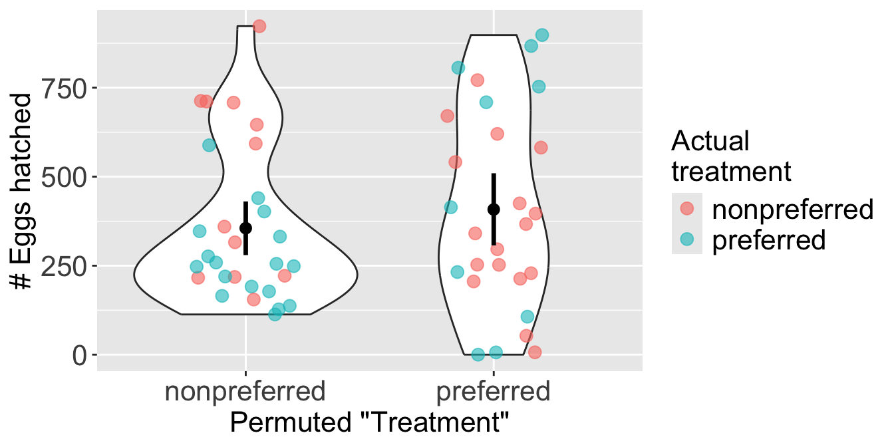
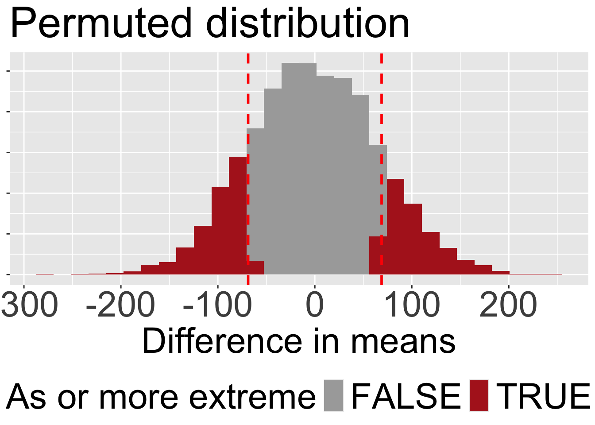

one_perm <- frogs |>
specify(hatched.eggs ~ treatment) |>
hypothesize(null = "independence") |>
generate(reps = 1, type = "permute")• 14. Permute
Motivating Scenario: You want to run a permutation test in R.
Learning Goals: By the end of this section, you should be able to:.
- Explain the logic of a permutation test and why shuffling data simulates a null hypothesis.
- Implement a permutation testfor the difference in means using the
inferpackage. - Calculate and interpret a p-value in the context of the data and the null hypothesis.
- Write a concise, formal summary of the results of a permutation test.
Recall the steps in a permutation test:
- State the null (\(H_0\)) and alternative (\(H_A\)) hypotheses.
- \(H_0\): The number of hatched eggs does not differ between preferred and non-preferred matings. .
- \(H_A\): The number of hatched eggs differs between preferred and non-preferred matings.
- \(H_0\): The number of hatched eggs does not differ between preferred and non-preferred matings. .
- Decide on a test statistic.
- The test statistic for a permutation test can be whatever best captures our biological hypothesis. In this case, we’ll use the difference in the mean number of eggs hatched between non-preferred and preferred matings.
- Calculate the test statistic for the actual data.
- We found 345.11 eggs hatching for preferred matings and 413.93 for non-preferred matings. So our test statistic is 345.11 - 413.93 = -68.82 between the means.

- Permute the data by shuffling values of the explanatory variables across observations.
We are at step four. This means
IT’S TIME TO…
PERMUTE THE FROG
Permuting once
Step 4: Permute the data by shuffling values of the explanatory variables across observations.
Now we permute the data by randomly shuffling the treatment onto our observed response variable, hatched.eggs. We can again use the infer package to do this! But now when we generate() we set type = "permute" instead of type = "bootstrap" We also specify() the model!
Figure 2 illustrates a single permutation. The colors show the frogs’ actual treatment group, while the x-axis shows their new, randomly permuted “treatment” group. As a result of the shuffle, each permuted group is now a mix of frogs from both original treatments.

Step 5: Calculate the test statistic on this permuted data set.
In this permuted dataset we see an observed test statistic of
one_perm |>
calculate(stat = "diff in means", order = c("preferred","nonpreferred"))Response: hatched.eggs (numeric)
Explanatory: treatment (factor)
Null Hypothe...
# A tibble: 1 × 1
stat
<dbl>
1 52.5This represents one draw from the permuted (null) distribution. Now we do this a bunch to find the sampling distribution and calculate a p-value!
I permuted once (showing steps 4 and 5) for illustrative purposes. When we actually permute we just do them all at once. I only say this because I sometimes see students repeat this step in their analyses, and that is fully unnecessary!
The permuted (null) distribution
Step 6: Repeat steps 4 and 5 many times to generate the sampling distribution under the null.
We generate the permuted distribution (to approximate the null sampling distribution) by increasing the number of permuted reps from 1 to a large number. In the example below, we generate 5000 permuted data sets.
How many permutations? There’s no strict rule for the number of permutations. It’s a trade-off between computational time and the precision of your p-value. As with bootstrapping, this is a trade-off between computational time and the precision of your p-value: more replicates are more precise but take longer to run. A good starting point is 5,000 permutations, but 1,000 is generally sufficient if the process is slow.
many_perms <- frogs |>
specify(hatched.eggs ~ treatment) |>
hypothesize(null = "independence") |>
generate(reps = 5000, type = "permute")|>
calculate(stat = "diff in means", order = c("preferred","nonpreferred"))The p-value
Step 7: Calculate a p-value as the proportion of permuted values that are as or more extreme than what was observed in the actual data.
Now we can find the p-value with infer’s get_p_value() function. This function requires three arguments:
x: The permuted distribution.
obs_stat: The observed test statistic. Note that I just pasted in our value of -68.82. This isn’t the best practice. I usually assign the observed value directly to a variable in R (to avoid rounding issues induced by copy and pasting).
direction: Use"two-sided"for a two tailed test.
Code to visualize the permuted distribution and our test stat.
many_perms |>
mutate(as_or_more_extreme = abs(stat) >= 68.8)|>
ggplot(aes(x = stat, fill = as_or_more_extreme))+
geom_histogram()+
scale_fill_manual(values = c("darkgrey","firebrick"))+
geom_vline(xintercept = c(68.8,-68.8), color = "red",lty = 2, linewidth = 1)+
labs(x = "Difference in means", fill = "As or more extreme", title = "Permuted distribution")+
theme(axis.text.x = element_text(size = 30),
axis.title.x = element_text(size = 30),
axis.text.y = element_blank(),
axis.title.y = element_blank(),
legend.title = element_text(size = 30),
legend.text = element_text(size = 30),
title = element_text(size = 30),
legend.position = "bottom")

get_p_value(x = many_perms, obs_stat = -68.82, direction = "two-sided")# A tibble: 1 × 1
p_value
<dbl>
1 0.318The get_p_value() gets the two-tailed p-value by multiplying the tail we’re looking at by two, rather than summing each side on its own. For symmetric distributions this is fine. For asymmetric sampling distributions, this requires more thought, and its probably righter to add up both sides. But this is probably close enough… we’re not trying to land a rocket ship here.
Interpret the p-value
Step 8: Interpret the p-value.
Our p-value is roughly 0.33 (Figure 3). This means that roughly one out of every three permuted data sets in which the association between mating treatment and egg number was randomly associated, generate a difference in means as or more extreme than the one we observed.
Therefore, we fail to reject the null hypothesis, as we do not have enough evidence to support the alternative hypothesis that the number of eggs hatched differs between preferred and non-preferred matings.
A write up
Step 9: Write up the results. The final step is to write-up our results:
In this study, we tested whether the number of hatched eggs differed between wood frogs that mated with preferred versus non-preferred females. Using a permutation test, we evaluated the null hypothesis that the number of eggs hatched does not differ between these two groups.
On average, frogs that mated with their preferred partner hatched 345.11 eggs, while those that mated with their non-preferred partner hatched 413.93 eggs. The observed difference in the number of eggs hatched between the two groups was -68.82 eggs.
To assess the significance of this observed difference, we generated a null distribution of the differences in egg counts by permuting the treatment labels (preferred vs. non-preferred). After running 5,000 permutations, we calculated a two-tailed p-value of 0.3176. This indicates that in a world where there is no true association between mating treatment and the number of eggs hatched, we would expect to see a difference as extreme as the observed one in about one in three cases due to random chance alone. We therefore fail to reject the null hypothesis. This suggests that there is insufficient evidence to support the claim that the number of hatched eggs is influenced by whether the male mated with a preferred or non-preferred female.